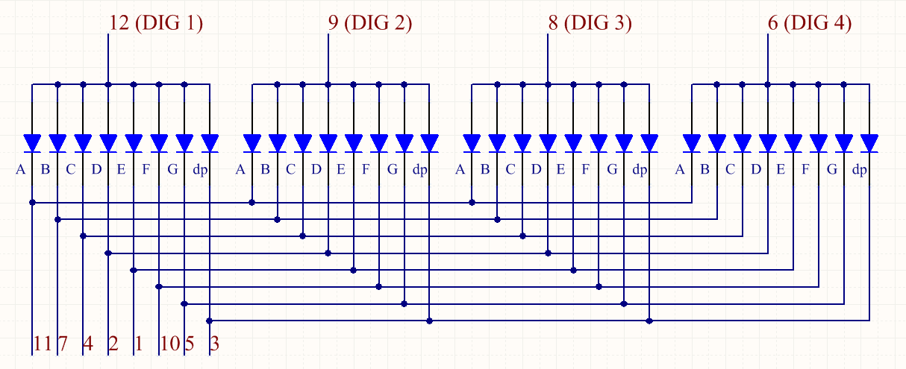

1.1.5 4-stellige 7-Segment-Anzeige¶
Einführung¶
Folgen Sie mir als Nächstes, um zu versuchen, die 4-stellige 7-Segment-Anzeige zu steuern.
Komponenten¶

Prinzip¶
4-stellige 7-Segment-Anzeige
Die 4-stellige 7-Segment-Anzeige besteht aus vier 7-Segment-Anzeigen, die zusammenarbeiten.

Das 4-Digtal-7-Segment-Display arbeitet unabhängig. Es verwendet das Prinzip der menschlichen visuellen Persistenz, um die Zeichen jedes 7-Segments schnell in einer Schleife anzuzeigen und fortlaufende Zeichenfolgen zu bilden.
Wenn beispielsweise „1234“ auf dem Display angezeigt wird, wird „1“ auf dem ersten 7-Segment angezeigt und „234“ wird nicht angezeigt. Nach einer gewissen Zeit zeigt das zweite 7-Segment „2“, das 1. 3. 4. des 7-Segments zeigt nicht usw. Die vier Digitalanzeigen werden nacheinander angezeigt. Dieser Vorgang ist sehr kurz (normalerweise 5 ms), und aufgrund des optischen Nachleuchteffekts und des Prinzips der visuellen Rückstände können wir vier Zeichen gleichzeitig sehen.
Koden anzeigen
Um Ihnen zu zeigen, wie 7-Segment-Anzeigen (Gemeisame Anode) Nummer anzeigen, haben wir die folgende Tabelle gezeichnet. Nummer sind die Nummer 0-F, die auf der 7-Segment-Anzeige angezeigt werden. (DP) GFEDCBA bezieht sich auf die entsprechende LED, die auf 0 oder 1 gesetzt ist. Beispielsweise bedeutet 11000000, dass DP und G auf 1 gesetzt sind, während andere auf 0 gesetzt sind. Daher wird die Nummer 0 auf dem 7-Segment-Display angezeigt, während der HEX-Kode der Hexadezimalzahl entspricht.

Schematische Darstellung¶
T-Karte Name |
physisch |
wiringPi |
BCM |
GPIO17 |
Pin 11 |
0 |
17 |
GPIO27 |
Pin 13 |
2 |
27 |
GPIO22 |
Pin 15 |
3 |
22 |
SPIMOSI |
Pin 19 |
12 |
10 |
GPIO18 |
Pin 12 |
1 |
18 |
GPIO23 |
Pin 16 |
4 |
23 |
GPIO24 |
Pin 18 |
5 |
24 |

Experimentelle Verfahren¶
Schritt 1: Bauen Sie die Schaltung auf.

Für Benutzer in C-Sprache¶
Schritt 2: Gehen Sie zum Ordner des Codes.
cd /home/pi/davinci-kit-for-raspberry-pi/c/1.1.5/
Schritt 3: Kompilieren Sie den Code.
gcc 1.1.5_4-Digit.c -lwiringPi
Schritt 4: Führen Sie die ausführbare Datei aus.
sudo ./a.out
Nachdem der Code ausgeführt wurde, nimmt das Programm eine Zählung vor, die um 1 pro Sekunde erhöht wird, und die 4-stellige 7-Segment-Anzeige zeigt die Zählung an.
Kode
#include <wiringPi.h>
#include <stdio.h>
#include <wiringShift.h>
#include <signal.h>
#include <unistd.h>
#define SDI 5
#define RCLK 4
#define SRCLK 1
const int placePin[] = {12, 3, 2, 0};
unsigned char number[] = {0xc0, 0xf9, 0xa4, 0xb0, 0x99, 0x92, 0x82, 0xf8, 0x80, 0x90};
int counter = 0;
void pickDigit(int digit)
{
for (int i = 0; i < 4; i++)
{
digitalWrite(placePin[i], 0);
}
digitalWrite(placePin[digit], 1);
}
void hc595_shift(int8_t data)
{
int i;
for (i = 0; i < 8; i++)
{
digitalWrite(SDI, 0x80 & (data << i));
digitalWrite(SRCLK, 1);
delayMicroseconds(1);
digitalWrite(SRCLK, 0);
}
digitalWrite(RCLK, 1);
delayMicroseconds(1);
digitalWrite(RCLK, 0);
}
void clearDisplay()
{
int i;
for (i = 0; i < 8; i++)
{
digitalWrite(SDI, 1);
digitalWrite(SRCLK, 1);
delayMicroseconds(1);
digitalWrite(SRCLK, 0);
}
digitalWrite(RCLK, 1);
delayMicroseconds(1);
digitalWrite(RCLK, 0);
}
void loop()
{
while(1){
clearDisplay();
pickDigit(0);
hc595_shift(number[counter % 10]);
clearDisplay();
pickDigit(1);
hc595_shift(number[counter % 100 / 10]);
clearDisplay();
pickDigit(2);
hc595_shift(number[counter % 1000 / 100]);
clearDisplay();
pickDigit(3);
hc595_shift(number[counter % 10000 / 1000]);
}
}
void timer(int timer1)
{
if (timer1 == SIGALRM)
{
counter++;
alarm(1);
printf("%d\n", counter);
}
}
void main(void)
{
if (wiringPiSetup() == -1)
{
printf("setup wiringPi failed !");
return;
}
pinMode(SDI, OUTPUT);
pinMode(RCLK, OUTPUT);
pinMode(SRCLK, OUTPUT);
for (int i = 0; i < 4; i++)
{
pinMode(placePin[i], OUTPUT);
digitalWrite(placePin[i], HIGH);
}
signal(SIGALRM, timer);
alarm(1);
loop();
}
Kode Erklärung
const int placePin[] = {12, 3, 2, 0};
Diese vier Pins steuern die gemeinsamen Anodenpins der vierstelligen 7-Segment-Anzeigen.
unsigned char number[] = {0xc0, 0xf9, 0xa4, 0xb0, 0x99, 0x92, 0x82, 0xf8, 0x80, 0x90};
Ein Segmentkode-Array von 0 bis 9 in hexadezimaler Darstellung (gemeinsame Anode).
void pickDigit(int digit)
{
for (int i = 0; i < 4; i++)
{
digitalWrite(placePin[i], 0);
}
digitalWrite(placePin[digit], 1);
}
Wählen Sie den Ort des Wertes. Es gibt nur einen Ort, der jedes Mal aktiviert werden sollte. Der aktivierte Ort wird hoch geschrieben.
void loop()
{
while(1){
clearDisplay();
pickDigit(0);
hc595_shift(number[counter % 10]);
clearDisplay();
pickDigit(1);
hc595_shift(number[counter % 100 / 10]);
clearDisplay();
pickDigit(2);
hc595_shift(number[counter % 1000 / 100]);
clearDisplay();
pickDigit(3);
hc595_shift(number[counter % 10000 / 1000]);
}
}
Mit dieser Funktion wird die auf der 4-stelligen 7-Segment-Anzeige angezeigte Nummer eingestellt.
Klare Anzeige (): Schreiben Sie in 11111111, um diese acht LEDs auf der 7-Segment-Anzeige auszuschalten und den angezeigten Inhalt zu löschen.pickDigit (0): Wählen Sie die vierte 7-Segment-Anzeige.hc595_shift (Nummer [Zähler% 10]): Die Nummer in der einzelnen Ziffer des Zählers wird im vierten Segment angezeigt.
signal(SIGALRM, timer);
Dies ist eine vom System bereitgestellte Funktion. Der Prototyp der Kode lautet:
sig_t signal(int signum,sig_t handler);
Nach dem Ausführen des Signals () hält der Prozess, sobald er das entsprechende Signal (in diesem Fall SIGALRM) erhalten hat, die vorhandene Aufgabe sofort an und verarbeitet die eingestellte Funktion (in diesem Fall Timer (sig)).
alarm(1);
Dies ist auch eine vom System bereitgestellte Funktion. Der Kode-Prototyp ist:
unsigned int alarm (unsigned int seconds);
Es erzeugt nach einer bestimmten Anzahl von Sekunden ein SIGALRM-Signal.
void timer(int timer1)
{
if (timer1 == SIGALRM)
{
counter++;
alarm(1);
printf("%d\n", counter);
}
}
Wir verwenden die obigen Funktionen, um die Timer-Funktion zu implementieren. Nachdem der Alarm () das SIGALRM-Signal erzeugt hat, wird die Timer-Funktion aufgerufen. Addiere 1 zum Zähler und die Funktion Warnung (1) wird nach 1 Sekunde wiederholt aufgerufen.
Für Python-Sprachbenutzer¶
Schritt 2: Gehen Sie zum Ordner des Codes.
cd /home/pi/davinci-kit-for-raspberry-pi/python/
Schritt 3: Führen Sie die ausführbare Datei aus.
sudo python3 1.1.5_4-Digit.py
Nachdem die Kode ausgeführt wurde, nimmt das Programm eine Zählung vor, die um 1 pro Sekunde erhöht wird, und die 4-stellige Anzeige zeigt die Zählung an.
Kode
import RPi.GPIO as GPIO
import time
import threading
SDI = 24
RCLK = 23
SRCLK = 18
placePin = (10, 22, 27, 17)
number = (0xc0, 0xf9, 0xa4, 0xb0, 0x99, 0x92, 0x82, 0xf8, 0x80, 0x90)
counter = 0
timer1 = 0
def clearDisplay():
for i in range(8):
GPIO.output(SDI, 1)
GPIO.output(SRCLK, GPIO.HIGH)
GPIO.output(SRCLK, GPIO.LOW)
GPIO.output(RCLK, GPIO.HIGH)
GPIO.output(RCLK, GPIO.LOW)
def hc595_shift(data):
for i in range(8):
GPIO.output(SDI, 0x80 & (data << i))
GPIO.output(SRCLK, GPIO.HIGH)
GPIO.output(SRCLK, GPIO.LOW)
GPIO.output(RCLK, GPIO.HIGH)
GPIO.output(RCLK, GPIO.LOW)
def pickDigit(digit):
for i in placePin:
GPIO.output(i,GPIO.LOW)
GPIO.output(placePin[digit], GPIO.HIGH)
def timer():
global counter
global timer1
timer1 = threading.Timer(1.0, timer)
timer1.start()
counter += 1
print("%d" % counter)
def loop():
global counter
while True:
clearDisplay()
pickDigit(0)
hc595_shift(number[counter % 10])
clearDisplay()
pickDigit(1)
hc595_shift(number[counter % 100//10])
clearDisplay()
pickDigit(2)
hc595_shift(number[counter % 1000//100])
clearDisplay()
pickDigit(3)
hc595_shift(number[counter % 10000//1000])
def setup():
GPIO.setmode(GPIO.BCM)
GPIO.setup(SDI, GPIO.OUT)
GPIO.setup(RCLK, GPIO.OUT)
GPIO.setup(SRCLK, GPIO.OUT)
for i in placePin:
GPIO.setup(i, GPIO.OUT)
global timer1
timer1 = threading.Timer(1.0, timer)
timer1.start()
def destroy(): # When "Ctrl+C" is pressed, the function is executed.
global timer1
GPIO.cleanup()
timer1.cancel() # cancel the timer
if __name__ == '__main__':
setup()
try:
loop()
except KeyboardInterrupt:
destroy()
Kode Erklärung
placePin = (10, 22, 27, 17)
Diese vier Pins steuern die gemeinsamen Anodenpins der vierstelligen 7-Segment-Anzeigen.
number = (0xc0, 0xf9, 0xa4, 0xb0, 0x99, 0x92, 0x82, 0xf8, 0x80, 0x90)
Ein Segmentkode-Array von 0 bis 9 in hexadezimaler Darstellung (gemeinsame Anode).
def clearDisplay():
for i in range(8):
GPIO.output(SDI, 1)
GPIO.output(SRCLK, GPIO.HIGH)
GPIO.output(SRCLK, GPIO.LOW)
GPIO.output(RCLK, GPIO.HIGH)
GPIO.output(RCLK, GPIO.LOW)
Schreiben Sie achtmal „1“ in SDI., Damit die acht LEDs auf dem 7-Segment-Anzeige erlöschen, um den angezeigten Inhalt zu löschen.
def pickDigit(digit):
for i in placePin:
GPIO.output(i,GPIO.LOW)
GPIO.output(placePin[digit], GPIO.HIGH)
Wählen Sie den Ort des Wertes. Es gibt nur einen Ort, der jedes Mal aktiviert werden sollte. Der aktivierte Ort wird hoch geschrieben.
def loop():
global counter
while True:
clearDisplay()
pickDigit(0)
hc595_shift(number[counter % 10])
clearDisplay()
pickDigit(1)
hc595_shift(number[counter % 100//10])
clearDisplay()
pickDigit(2)
hc595_shift(number[counter % 1000//100])
clearDisplay()
pickDigit(3)
hc595_shift(number[counter % 10000//1000])
Mit dieser Funktion wird die auf der 4-stelligen 7-Segment-Anzeige angezeigte Nummer eingestellt.
Starten Sie zuerst die vierte Segmentanzeige und schreiben Sie die einstellige Nummer. Dann starten Sie die Anzeige des dritten Segments und geben Sie die Zehnerstelle ein. Starten Sie danach die zweite bzw. die erste Segmentanzeige und schreiben Sie die Hunderter- bzw. Tausenderstellen. Da die Aktualisierungsgeschwindigkeit sehr hoch ist, sehen wir eine vollständige vierstellige Anzeige.
timer1 = threading.Timer(1.0, timer)
timer1.start()
Das Modul Threading ist das übliche Threading-Modul in Python Tim und Timer ist die Unterklasse davon. Der Prototyp der Kode ist:
class threading.Timer(interval, function, args=[], kwargs={})
Nach dem Intervall wird die Funktion ausgeführt. Hier beträgt das Intervall 1.0， und die Funktion ist timer (). start () bedeutet, dass der Timer an diesem Punkt startet.
def timer():
global counter
global timer1
timer1 = threading.Timer(1.0, timer)
timer1.start()
counter += 1
print("%d" % counter)
Nachdem der Timer 1,0 Sekunden erreicht hat, wird die Timer-Funktion aufgerufen. Addiere 1 zum Zähler und der Timer wird erneut verwendet, um sich jede Sekunde wiederholt auszuführen.
Phänomen Bild¶